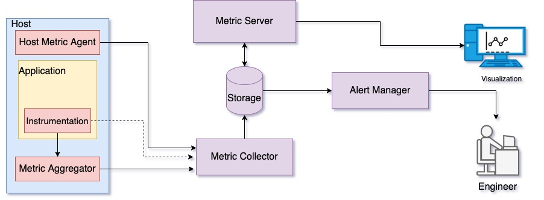

先決條件
本課程預期學習成果
監控是任何系統中不可或缺的一部分。作為 SRE，您需要 具備服務基礎架構監控的基本理解。通過 本課程結束，您將更好地理解以下主題：
-
什麼是監控？
-
什麼需要被衡量
-
如何使用收集到的指標來改善商業決策與整體可靠度
-
利用警報的主動監控
-
日誌處理及其重要性
-
-
什麼是可觀察性？
-
分散式追蹤
-
日誌
-
指標
-
本課程未涵蓋內容
-
監控基礎架構建立指南
-
深入探討不同監控技術及工具的基準測試或比較
課程內容
介紹
監控是從系統中收集即時性能指標、 分析資料以獲取有意義資訊、並將資料展示給使用者的過程。 簡單來說，您定期測量各種指標以了解系統狀況，包括但不限於使用者請求、延遲和錯誤率。測量即是改進—如果您能衡量某項事物，就能理性分析它、理解它、討論它，並自信地採取行動。
監控的四大黃金訊號
當為系統設置監控時，您需要決定要衡量什麼指標。四大黃金訊號提供對服務效能的良好理解，並為系統監控奠定基礎。這四大黃金訊號包含：
-
流量
-
延遲
-
錯誤
-
飽和度
這些指標有助於了解系統效能和瓶頸，並打造更佳的最終用戶體驗。如同 Google SRE 書籍 中所述， 如果你只能測量服務的四個指標，就專注於這四個。以下是對四大黃金訊號的詳細說明：
-
流量—流量 能幫助更好地理解服務需求。通常稱為服務 QPS（每秒查詢數）， 流量衡量服務所處理的請求數量。這個訊號能協助您判斷何時應將服務擴充以應對增長的客戶需求，或縮減以降低成本。
-
延遲—延遲 衡量服務處理進來請求並回應所花費的時間。測量延遲可幫助及早發現服務效能逐漸下降的狀況。 分辨成功請求和失敗請求的延遲差異很重要。例如，由於與資料庫或其他重要後端連線中斷引發的 HTTP 5XX 錯誤 可能會很快被回應。然而，因 HTTP 500 表示請求失敗，將 500 錯誤納入整體延遲計算，可能會造成誤導。
-
錯誤率—錯誤率 衡量用戶端失敗請求數。這些失敗通常可從回應碼判斷（如 HTTP 5XX 錯誤）， 但也可能因錯誤結果資料或政策違規而被視為錯誤。例如， 您可能收到 HTTP 200 回應， 但回應內容為不完整資料，或是回應時間超出約定的 SLA。因此，除了回應碼之外，您還需要透過其他機制（程式碼邏輯或嵌入式監控）來捕捉錯誤狀況。
-
飽和度—飽和度 衡量服務資源的利用率。此訊號告知服務資源的狀態以及使用程度。資源包含記憶體、運算能力、網路 I/O 等。服務效能往往在資源利用達 100% 前即逐漸退化，因此設定利用率目標很重要。延遲增加即是飽和度提升的良好指標；測量延遲的 99 百分位數 有助於及早偵測飽和狀況。
視服務類型不同，您可用不同方式衡量這些訊號。例如，您可以為 Web 伺服器測量每秒處理的查詢數；而對資料庫伺服器，則可藉由交易數與建立的資料庫連線數了解流量情況。透過額外的程式碼邏輯（監控套件與嵌入式監控），您可以定期測量這些訊號並加以儲存以供後續分析。雖然這些指標反映服務端效能，您仍需確保使用者端也得到良好的使用體驗，因此可能須從服務基礎架構之外監控，這在第三方監控中有所說明。
監控為何重要？
監控在服務成功中扮演關鍵角色。如前所述，監控提供效能洞察，協助了解服務健康狀態。利用長期累積的歷史資料，您可以打造智能化應用，滿足特定需求。主要用例如下：
-
縮短問題解決時間—透過良好的監控基礎架構，您可以快速定位並解決問題，減少問題帶來的影響。
-
商業決策—長期收集的資料可幫助您作出商業決策，如產品發佈週期、投入開發的功能、以及聚焦的地區，藉由數據驅動決策提升整體產品體驗。
-
資源規劃—藉由分析歷史資料，您可以預測服務所需的計算資源，並適當分配，達成財務效益最大化且不犧牲使用者體驗。
在深入探討監控前，先了解一些基本術語：
-
指標 (Metric)—系統特定屬性的量化度量，例如記憶體或 CPU 使用率
-
節點或主機 (Node or host)—執行應用程式的物理伺服器、虛擬機器或容器
-
QPS—Queries Per Second，服務每秒處理的查詢數
-
延遲 (Latency)—使用者操作與伺服器回應間的時間差，如送出資料庫查詢到收到第一個回應位元組的時間
-
錯誤率 (Error rate)—在特定時間內（通常為一秒）觀察到的錯誤數
-
圖表 (Graph)—監控中用以呈現隨時間收集的一個或多個指標數值
-
儀表板 (Dashboard)—一組圖表的集合，用以概觀系統健康狀態
-
事件 (Incident)—干擾系統正常運作的事件
-
平均偵測時間 (MTTD, Mean Time To Detect)—服務失效起始至偵測該失效的時間
-
平均修復時間 (MTTR, Mean Time To Resolve)—修復服務失效並恢復正常的時間
在討論應用程式監控前，我們先來看看監控基礎架構。下圖示意一個基本的監控系統。

圖 1：監控基礎架構示意圖
圖 1 描述了一個監控基礎架構的機制，用於彙整系統指標、收集及儲存資料供顯示使用。 此外，監控系統通常包含警報子系統，在異常狀況時通知相關人員。以下說明各個基礎架構元件：
-
主機指標代理 (Host metrics agent)—主機指標代理 是在主機上運行的進程， 負責收集主機子系統（如記憶體、CPU、網路）的性能統計數據。 這些指標會定期傳送給指標收集者儲存及視覺化。 例子有 collectd、telegraf、和 metricbeat。
-
指標彙整器 (Metric aggregator)—指標彙整器 是運行於主機上的進程。 主機上的應用程式透過 嵌入式監控 收集服務指標。 收集到的指標會送交彙整器或直接透過 API 發送到指標收集者。 彙整器定期將指標彙整後批次送出給指標收集者。 例子為 StatsD。
-
指標收集器 (Metrics collector)—指標收集器 負責收集來自多台主機上指標彙整器的所有指標， 並進行解碼及存儲。 指標收集與存儲可由單一服務完成，例如 InfluxDB。 例子有 carbon daemons。
-
儲存 (Storage)—時間序列資料庫用於存放所有指標。 例如 OpenTSDB、Whisper、和 InfluxDB。
-
指標伺服器 (Metrics server)—指標伺服器 可以是將指標資料以圖形方式呈現的基本網頁伺服器。 另外也提供彙整功能與程式化存取指標資料的 API。 例子有 Grafana 和 Graphite-Web。
-
警報管理器 (Alert manager)—警報管理器 會定期監控指標資料， 一旦偵測出異常就會通知相關人員。 每個警報都有一組規則用以識別異常狀況。 今天許多指標伺服器如 Grafana 皆支持警報管理。 我們將在後文詳細討論警報。 例子有 Grafana 和 Icinga。